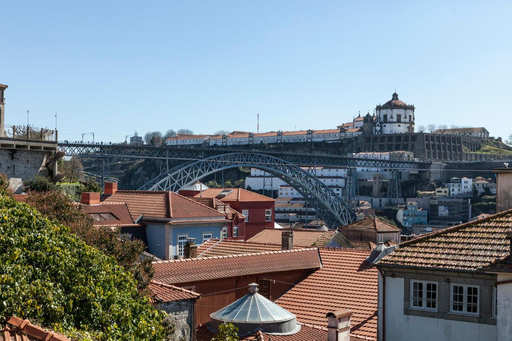
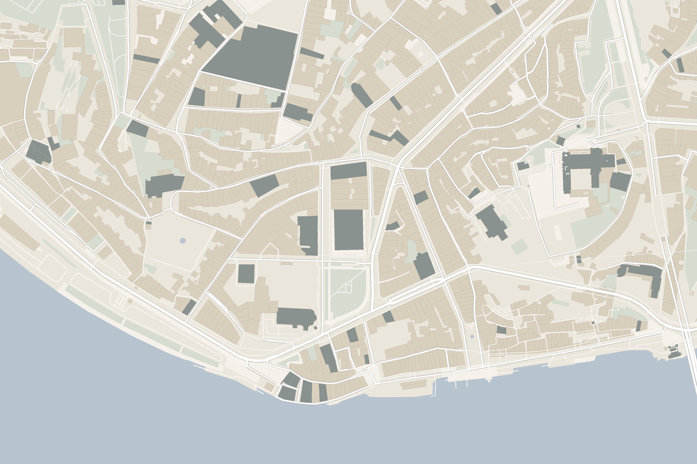
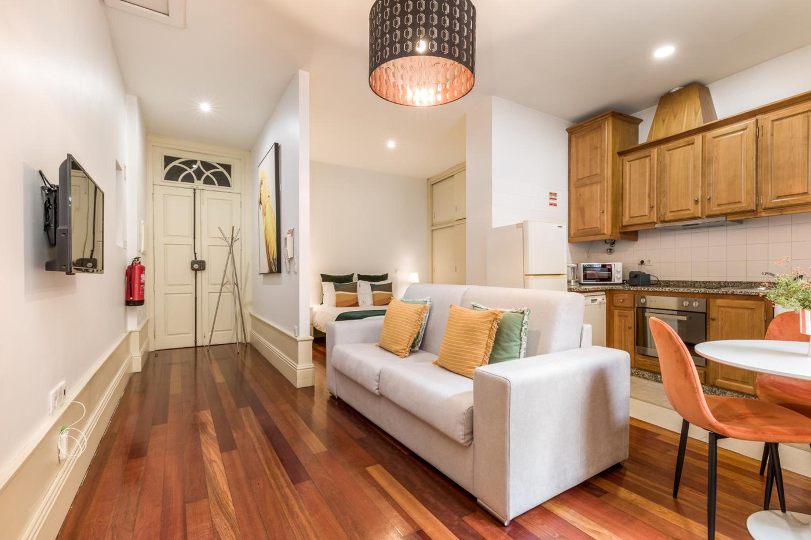

Apartments2Stay Apartamentos Casas do Pátio
Casasdo Pátio
Ribeira · Porto
Estúdios e apartamentos no centro histórico, a menos de 300 m do Douro, com a Sé e a Ponte D. Luís a 400 m.

- 12tipologias
- 22–80m²
- 300m ou menos até ao Douro
- 400m até à Sé
As vistas
Por cimada Ribeira.
O Loft e o Estúdio Dúplex têm varanda, e várias tipologias têm vista para a cidade: o Palácio da Bolsa, o Mercado Ferreira Borges, os telhados até à Ponte D. Luís.
Cada unidade tem cozinha e casa de banho privativas, e há Wi-Fi gratuito.
Tipologias
Do estúdioao loft.
Cada tipologia reserva-se à parte: escolha a sua e marque as datas.
Áreas e equipamento de cada tipologia segundo o Booking (novembro de 2026).
Por dentro
Paredes de granito,tetos de madeira.
Em todas as unidades
Comodidades
O que o anúncio confirma; o ar condicionado e a varanda dependem da tipologia.
Cozinha privativa
Em todas as unidades.
Casa de banho privativa
Em todas as unidades.
Wi-Fi gratuito
Em todo o alojamento.
Ar condicionado
Nos estúdios e no Apartamento Superior.
Varanda
No Loft e no Estúdio Dúplex.
Vista para a cidade
Em várias tipologias.
Ribeira
Localização
Na Ribeira, entre o rio e a Rua das Flores.

Rua Nova da AlfândegaTúnel da RibeiraAvenida Dom Afonso HenriquesRua de MiragaiaRua das FloresRua do Cais da RibeiraRua da Bolsa Sé do PortoPalácio da BolsaFeitoria BritânicaPalacete de BelomonteIgreja de São FranciscoRestaurante ComercialIgreja dos Terceiros FranciscanosIgreja da Misericórdia Casas do Pátio 200 mVárias moradas na Ribeira4050-567 Porto
- Rio Douro< 300 m
- Sé do Porto400 m
- Ponte D. Luís400 m
- Estação de São Bento500 m
- Aeroporto12 km
Distâncias aproximadas, calculadas pelo Booking.
Como chegarAntes de chegar
Antesde chegar.
Regras do anúncio no Booking (novembro de 2026), a confirmar. Nas datas vistas, a estadia mínima era de 2 noites.
- Check-in
- 16:00 – 22:00, com documento e cartão
- Check-out
- até às 11:00
- Silêncio
- das 22:00 às 08:00
- Fumar
- não
- Festas
- não
- Animais
- não são admitidos
Apartments2Stay
Outras formas de ficar.
-

Discovery
Estúdio · 35 m² · até 2 pessoas
Um estúdio amplo no 3.º andar, com janela para um pátio de azulejos.
Ver o apartamento -

Flores
Estúdio 35 m² ou Superior 46 m² · até 2 pessoas
Dois tipos de apartamento num prédio antigo do Largo de São Domingos, com varanda sobre o largo.
Ver o apartamento
Casas do Pátio 37 fotografias